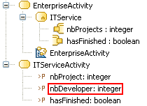

Pins of a CallBehaviorAction must match the called Behaviour’s BehaviorParameters.
The number of InputPins and the number of BehaviorParameters of type “in” and “inout” of the Behaviour must be equal.
The number of OutputPins and the number of return BehaviorParameters and BehaviorParameters of type “out” and “inout” of the Behaviour must be equal.
Example:

The CallBehaviorAction “ITService” is invalid because the BehaviorP__arameter “nbDevelopers” of the called Activity “ITServiceActivity” is not matched to one of its Pins.
represented by a ValuePin rather than a simple InputPin.
BehaviorParameters of type “inout” must be represented by both an InputPin for the “in” aspect and an OutputPin for the “out” aspect.
Return BehaviorParameters must be represented by an OutputPin.